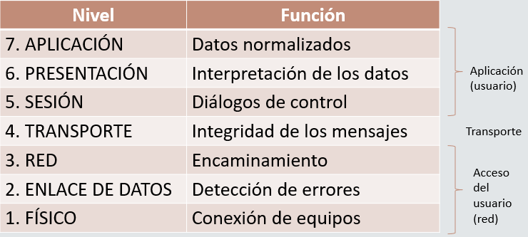

La estandarización tiene consecuencias positivas y negativas, pero en cualquier caso se hace necesaria en un entorno con diversidad de red redes, fabricantes de equipos y operadores de telecomunicaciones.
La arquiterctura de red propuesta por ISO ha sido un hito en el estudio y desarrollo de las telecomunicaciones, estableciendo los fundamentos para la comunicación entre elementos de la red y las aplicaciones.
Estructura de niveles modelo ISO
1984 por la necesidad de interconectar sistemas de diferente procedencia, donde utilizaba cada uno su propio protocolo para el intercambio.
Abierto para proporcionar facilidad al modelo frente a los propietarios.
7 niveles o capas, cada una con una funcionalidad especíica -> Interconexión e interoperactividad de sistemas heterogéneos.
Separación de las tareas para comunicar los datos entre dos sistemas independientes.
No es una arquiterctura de red, solo la función que se debe realizar en cada capa.
